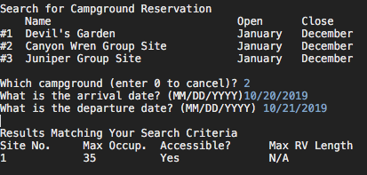
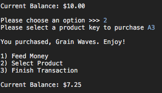

My Works
National Parks Weather Service Web App

Provided wireframes and a user story I developed a dynamic web application to display National Parks information with a partner over the course of 3 days. Users can select a park for detailed information including a weather forecast and the ability to take a daily survey. Technologies used include Java, Spring Web MVC, Tomcat, JSTL, JSP EL, PostgreSQL, HTML, CSS, JUnit, Selenium, and Cucumber. Click the image to check out the code!
National Parks Campsite Reservation App
With a partner over the course of 4 days I developed command line interface software to reserve national parks campsites in Java. Implements JDBC with PostgreSQL to write user input to database. Integration and unit tested. Click the image to check out the code!
Vending Machine Software
With a pair programming partner over the course of four days I developed a command line interface vending machine in Java using test driven development. It loads inventory from a csv file and writes a sales log to txt file. Unit Tested. Click the image to check out the code!